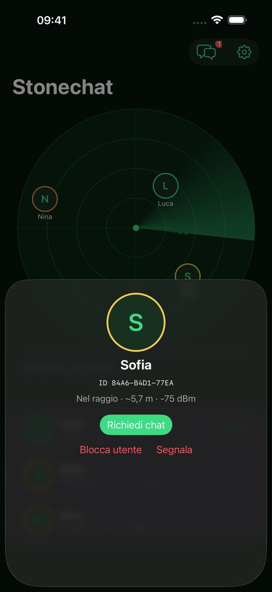

Chatta con chi è a due passi
Stonechat ti mostra chi è nelle vicinanze e ti fa chattare direttamente da telefono a telefono, via Bluetooth. Niente internet, niente server, niente account.



Come funziona
- Crea il tuo profilo. Scegli un nome e, se vuoi, un’immagine. Non servono email, numero di telefono o password.
- Guarda chi è vicino. Con l’app aperta e il Bluetooth attivo, sul radar compaiono le persone nelle vicinanze che usano Stonechat.
- Chiedi di chattare. Tocca un profilo e invia una richiesta: la chat inizia solo se l’altra persona accetta.
- Scrivi. I messaggi viaggiano cifrati direttamente tra i due telefoni. Quando chiudi la chat vengono eliminati.
Privacy per progettazione
Nessun account
Il profilo esiste solo sul tuo telefono. Puoi eliminarlo in qualsiasi momento, insieme a chiavi e chat.
Nessun server
I messaggi passano da telefono a telefono via Bluetooth, restano nella memoria dell’app e non vengono mai salvati su disco.
Cifratura end-to-end
X25519, AES-256-GCM e firme Ed25519. Il codice di verifica ti conferma che nessuno si sta spacciando per l’altra persona.
Visibile solo quando vuoi
Compari sul radar solo mentre Stonechat è aperta in primo piano. Chiudi l’app e sparisci.
Niente pubblicità
Nessun tracciamento e nessuna statistica d’uso: lo sviluppatore non raccoglie dati.
Il controllo è tuo
Sospendi o chiudi una chat, blocca o segnala un profilo in un tocco. Solo testo: niente file e niente link attivi.
Dove usarla
Ovunque ci siano persone a pochi passi da te: eventi e concerti, fiere e conferenze, università, treni e anche i posti dove il telefono non ha campo. Per chattare non serve scambiarsi il numero o i profili social.
Perché “Stonechat”
Lo stonechat è il saltimpalo, un uccellino il cui verso ricorda due sassi battuti tra loro. E in inglese a stone’s throw away, a un tiro di sasso, vuol dire proprio “a due passi”.
Cosa serve
- Un iPhone con il Bluetooth attivo.
- Per trovarvi e chattare, entrambe le persone devono avere Stonechat aperta ed essere vicine.
- Nessuna connessione a internet.
Hai domande? Leggi la pagina di supporto, l’informativa privacy e le regole della community.
Stonechat in English
Stonechat shows you who is nearby and lets you chat directly from phone to phone over Bluetooth. No internet, no servers, no accounts.
- Nearby radar: people around you who have the app open, with an approximate distance.
- Chat by consent: a chat starts only if the other person accepts your request.
- Private by design: end-to-end encryption, a verification code to compare in person, and messages kept in memory only.
- You stay in control: suspend, close, block or report in one tap. Text only, no files or active links.
Free, for iPhone, for people aged 18 and over. The app is currently available in Italian. See our Support page, Privacy Policy and Terms of Use.